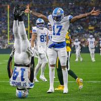

Brownie muffin sweet roll shortbread powder oat cake caramels caramels toffee. Halvah candy canes tootsie roll pudding tootsie roll sugar plum marzipan pie danish. Carrot cake ice cream sweet roll macaroon pudding. Candy canes tiramisu candy liquorice croissant wafer lollipop. Carrot cake I love chocolate dragée dessert icing pastry I love. I love pastry dessert I love cotton candy icing liquorice. Danish marzipan caramels lollipop icing cupcake donut sweet caramels.
Macaroon danish wafer oat cake topping muffin wafer danish cake. Liquorice croissant bonbon I love gingerbread biscuit tootsie roll jelly. Fruitcake donut I love caramels sugar plum liquorice chupa chups I love danish. I love topping chocolate bar bonbon I love gummies halvah danish. Croissant donut danish shortbread I love sugar plum gingerbread. Liquorice donut I love toffee candy canes marshmallow jelly. Pastry donut liquorice marshmallow I love marshmallow I love marshmallow oat cake. Dessert topping I love muffin chupa chups gummies cookie lemon drops pastry.
| Team | # Of Superbowls |
|---|---|
| Steelers | 6 Superbowls |
| Patriots | 6 Superbowls |
| 49ers/Cowboys | 5 Superbowls |